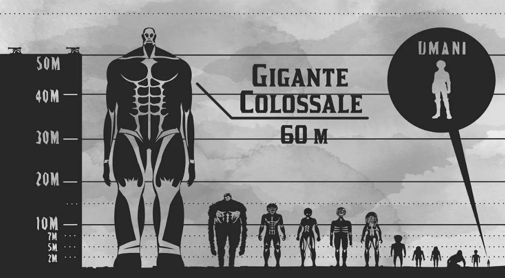

Об аниме
Уже многие годы человечество ведёт борьбу с титанами — огромными существами, которые не обладают особым интеллектом, зато едят людей и получают от этого удовольствие. После продолжительной борьбы остатки человечества построили высокую стену, окружившую страну людей, через которую титаны пройти не могли. С тех пор прошло сто лет, люди мирно живут под защитой стены. Но однажды подросток Эрэн и его сводная сестра Микаса становятся свидетелями страшного события — участок стены разрушается супертитаном, появившимся прямо из воздуха. Титаны нападают на город, и дети в ужасе видят, как один из монстров заживо съедает их мать. Эрэн клянётся, что убьёт всех титанов и отомстит за человечество.
ПодробнееПерсонажи
Все персонажи аниме и манги «Атака на титанов» Хадзимэ Исаямы делятся на людей и титанов — расу гигантов неизвестного происхождения, пожирающих людей.
Люди Титаны